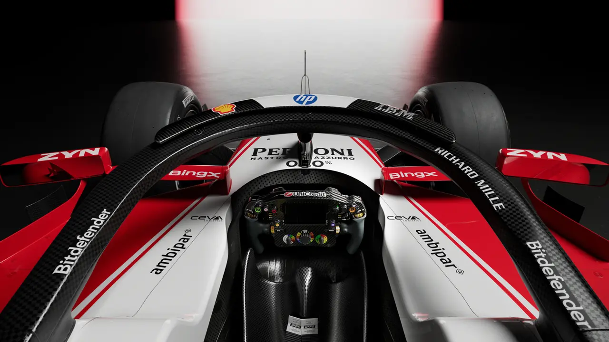
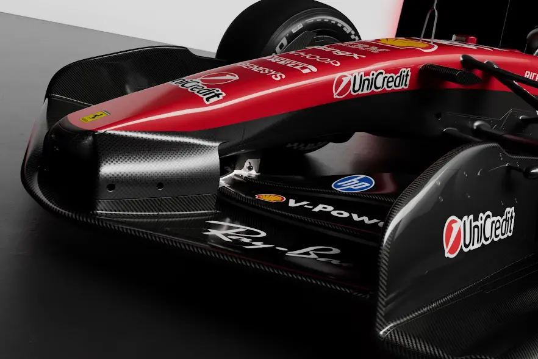
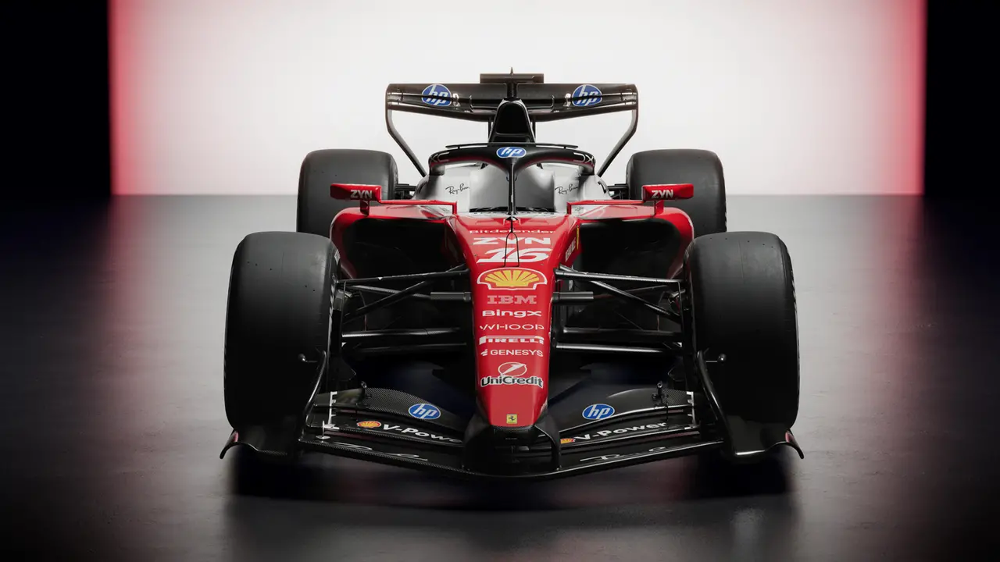
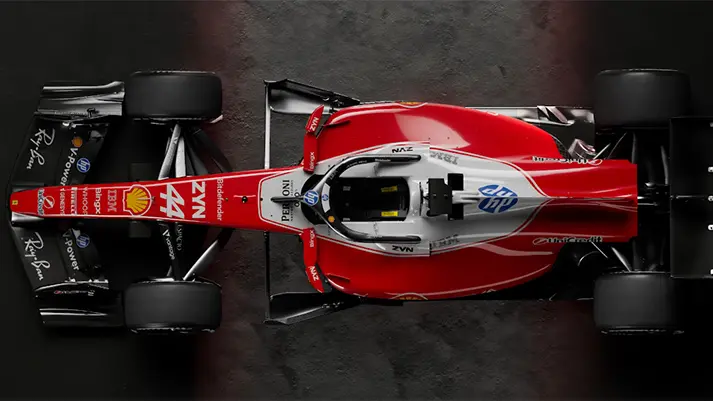
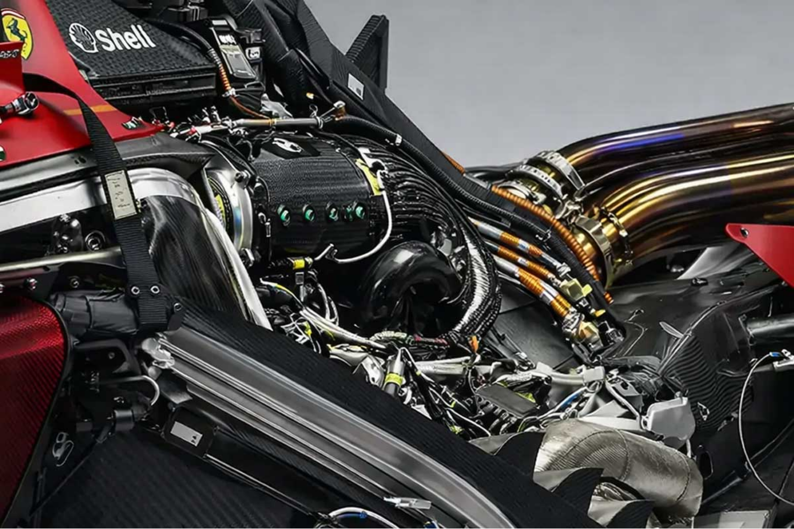

Η Ferrari για το 2026 έκανε μια στρατηγική απόφαση που θα μπορούσε να μετρήσει στα χιλιόμετρα - επέλεξε την εξέλιξη παρά την επανάσταση. Η SF26 δεν είναι ένα νέο αυτοκίνητο, αλλά μια προσεκτικά διαμορφωμένη εξέλιξη της SF25, με στόχο να πετύχει αυτό που η ομάδα δεν κατάφερε το 2025: σταθερότητα και απόδοση μαζί.
Μονοκόκ
Το monocoque της SF26 είναι ένα πραγματικό αριστούργημα μηχανικής. Όχι μόνο το βάρος του είναι 780 kg (15 kg λιγότερο από την SF25), αλλά η κατανομή του βάρους έχει αλλάξει ριζικά. Η Ferrari χρησιμοποίησε μια τεχνική που ονομάζεται "weight stacking" - τοποθέτησε τα βαρύτερα συστατικά (κινητήρας, μπαταρίες, ERS) όσο το δυνατόν πιο χαμηλά και κεντρικά.

Το πιο ενδιαφέρον είναι τα υλικά. Για πρώτη φορά, η Ferrari χρησιμοποίησε ανθρακονήματα με υψηλή πυκνότητα (high-density carbon fiber) σε συνδυασμό με θερμοπλαστικά για τις μη κρίσιμες δομές. Αυτό επιτρέπει την εξοικονόμηση 12 kg χωρίς θυσία στην ακαμψία. Οι ενισχύσεις από τιτάνιο δεν είναι τυχαίες - τοποθετήθηκαν στα σημεία όπου η ανάρτηση συναντά το monocoque, εκεί όπου οι δυνάμεις είναι μέγιστες κατά τις στροφές.
Μύτη

Η μύτη της SF26 είναι ίσως το πιο αμφιλεγόμενο στοιχείο του αυτοκινήτου. Η Ferrari επέλεξε μια συμμετρική μύτη με τριπλό στοιχείο (T-Pod), μια λύση που θυμίζει τις Mercedes του 2014. Αλλά η ομοιότητα είναι μόνο επιφανειακή.
Το πραγματικό ματς κρύβεται στα bargeboards. Η Ferrari χρησιμοποίησε πέντε διαφορετικές πλάκες, όχι για να κάνει το αυτοκίνητο να μοιάζει περίπλοκο, αλλά για να ελέγξει με ακρίβεια την ροή του αέρα. Κάθε πλάκη έχει μια συγκεκριμένη γωνία και καμπυλότητα, δημιουργώντας μια "κατάστρωση" που κατευθύνει τον αέρα προς το δάπεδο.
Η καινοτομία είναι στις ενεργές μπροστινές πτέρυγες. Δεν είναι απλώς δύο θέσεις - είναι ένα σύστημα που προσαρμόζεται συνεχώς. Οι αισθητήρες στο μονοθέσιο μετρούν την ταχύτητα, την πίεση και την γωνία στροφής, και οι πτέρυγες προσαρμόζονται ανά 0.01 δευτερόλεπτα. Αυτό επιτρέπει στην Ferrari να πετύχει κάτι που άλλες ομάδες προσπαθούν χρόνια: να έχει χαμηλή αντίσταση στις ευθείες αλλά υψηλό downforce στις στροφές.
Δάπεδο
Το δάπεδο είναι ο πιο περιορισμένος χώρος στα νέα κανονισμούς - 100 mm πιο στενό από το 2025. Η Ferrari αντιμετώπισε ένα τεχνικό δίλημμα: να διατηρήσει το downforce ή να μειώσει την τριβή;
Η λύση ήταν μια "διπλή λογική" στο δάπεδο. Εξωτερικά, το δάπεδο είναι σχεδόν επίπεδο - ελάχιστο τούνελ για να μειώσει την τριβή. Εσωτερικά, όμως, υπάρχουν δύο κρυφά κανάλια που συμπιέζουν τον αέρα και τον κατευθύνουν προς το κέντρο. Αυτά τα κανάλια δεν είναι ορατά - είναι κρυμμένα κάτω από την επιφάνεια, και μόνο οι μηχανικοί της Ferrari γνωρίζουν ακριβώς πώς λειτουργούν.
Η επιφάνεια του δαπέδου έχει και μια άλλη λειτουργία - διαχείριση της θερμοκρασίας. Οι θερμικές ζώνες δεν είναι απλές γραμμές - είναι ένας πολύπλοκος ιστός από αγωγούς που μεταφέρουν τη θερμότητα από τον κινητήρα και τα συστήματα ERS προς τα εξωτερικά σημεία του αυτοκινήτου. Αυτό επιτρέπει καλύτερο έλεγχο της θερμοκρασίας, κάτι που είναι κρίσιμο όταν τα βιοκαύσιμα μπορούν να αλλάξουν τις ιδιότητες του καυσίμου σε υψηλές θερμοκρασίες.
Πίσω Πτέρυγα
Η πίσω πτέρυγα της SF26 είναι ένα μικρό αεροπλάνο. Το beam wing δεν είναι σταθερό - αλλάζει προφίλ ανάλογα με την ταχύτητα και τη γωνία του DRS. Η Ferrari χρησιμοποίησε μια τεχνική που ονομάζεται "variable camber" - η καμπυλότητα της πτέρυγας αλλάζει δυναμικά, επιτρέποντας μεγαλύτερη ευελιξία.

Το DRS είναι επίσης διαφορετικό. Δεν είναι απλώς μια λωρίδα - είναι ένα διπλό σύστημα. Η πρώτη λωρίδα είναι το κλασικό DRS για προσπεράσεις. Η δεύτερη λωρίδα ελέγχει την αεροδυναμική αντίσταση κατά το recharge της μπαταρίας - όταν ο κινητήρας λειτουργεί ως γεννήτρια, η δεύτερη λωρίδα ανοίγει ελαφρά, μειώνοντας την αντίσταση και επιτρέποντας περισσότερη ενέργεια να ανακτηθεί.
Η αεροδυναμική οροφή έχει και μια κρυφή λειτουργία - λειτουργεί ως "αεροδυναμικό φρένο". Σε περιπτώσεις έκτακτης ανάγκης, τα αεροδυναμικά στοιχεία κλειδώματος μπορούν να ανοίξουν ελαφρά, δημιουργώντας επιπλέον αντίσταση και βοηθώντας τον οδηγό να ελέγξει το αυτοκίνητο.
Υβριδικό Σύστημα
Η μεγαλύτερη αλλαγή για τη Ferrari είναι η αφαίρεση του MGU-H. Αυτή δεν είναι απλώς μια τεχνική αλλαγή - είναι μια στρατηγική απόφαση που βασίζεται σε δεδομένα από το 2025.
Η Ferrari διαπίστωσε ότι ο MGU-H προσέφερε μόνο 3% της συνολικής ισχύος, αλλά καταλάμβανε 15 kg βάρους και απαιτούσε συνεχή συντήρηση. Η απόφαση να τον αφαιρέσει ήταν άμεση αποτέλεσμα της ανάλυσης των δεδομάτων από την SF25.
Το νέο σύστημα MGU-K έχει ισχύ 350 kW, σχεδόν τριπλάσιο από τον προκάτοχό του. Η διαχείριση της ενέργειας γίνεται μέσω ενός νέου αλγορίθμου που ονομάζεται "predictive energy management". Ο αλγόριθμος προβλέπει τις επόμενες 5 στροφές και προσαρμόζει την ανάκτηση ενέργειας ανάλογα με τις ανάγκες του αυτοκινήτου.

Οι έξι λειτουργίες Boost/Overtake δεν είναι απλώς προγράμματα - είναι ένας πολύπλοκος αλγόριθμος που συνδυάζει πολλαπλές μεταβλητές: θέση στο γκριτ, απόσταση από τον ανταγωνιστή, υπόλοιπο καυσίμου, θερμοκρασία των μπαταριών. Η λειτουργία 6, που ενεργοποιείται από τον οδηγό, είναι στην πραγματικότητα μια "emergency override" - όταν ο οδηγός πιέζει το κουμπί, το σύστημα παράγει την μέγιστη δυνατή ισχύ για 2 δευτερόλεπτα, ρισκάροντας την υπερθέρμανση των μπαταριών.
Κινητήρας
Ο κινητήρας Ferrari V6 (066/7) είναι ένας από τους πιο περίπλοκους κινητήρες στην ιστορία της F1. Η Ferrari διατήρησε την βασική αρχιτεκτονική, αλλά έκανε σημαντικές αλλαγές στην καύση.
Οι κανονισμοί 2026 επιβάλλουν βιοκαύσιμα έως 40%, αλλά η Ferrari πήρε ένα βήμα παραπέρα - ανέπτυξε ένα σύστημα ψυχής εγχύσεως καυσίμου. Αυτό το σύστημα ψυχρέπει το καύσιμο πριν το εγχύσει στον κύλινδρο, επιτρέποντας καλύτερη καύση και μείωση των εκπομπών κατά 18%.

Η μεγαλύτερη αλλαγή είναι στο σύστημα εξάτμισης. Οι διαφορικοί καθετήρες δεν είναι απλώς ευέλικτοι - αλλάζουν την καμπυλότητα και τη διάμετρο ανάλογα με τις στροφές του κινητήρα. Αυτό επιτρέπει καλύτερη ροή των αερίων εξάτμισης, βελτιώνοντας την απόδοση κατά 7% σε χαμηλές στροφές.
Ανάρτηση
Η SF26 χρησιμοποιεί μια κλασική προσέγγιση στην ανάρτηση - pull-rod εμπρός και push-rod πίσω. Αλλά η γεωμετρία είναι εντελώς διαφορετική.
Η Ferrari άλλαξε την γωνία της ανάρτησης κατά 2.5 μοίρες, δημιουργώντας μια πιο "ακτινική" γεωμετρία. Αυτή η αλλαγή μειώνει την αλλαγή του κάμπερ κατά την αποσυμπίεση, επιτρέποντας καλύτερη πρόσφυση στις στροφές.
Οι τρεις προκαθορισμένες ρυθμίσεις δεν είναι απλές επιλογές - είναι πολύπλοκα προγράμματα που αλλάζουν την σκληρότητα των ελατηρίων, την αμορτισέρ και ακόμη και την γωνία της ανάρτησης. Η ρύθμιση "Wet" για παράδειδο, αλλάζει την γεωμετρία της ανάρτησης κατά 3 μοίρες, δημιουργώντας μεγαλύτερη επιφάνεια επαφής με την επιφάνεια.
Στρατηγική
Η SF26 δεν είναι το πιο γρήγορο αυτοκίνητο στην πίστα. Αλλά μπορεί να είναι το πιο αξιόπιστο. Η Ferrari έκανε μια στρατηγική επιλογή - αντί να ρισκάρει με ριζικές αλλαγές, επέλεξε να βελτιώσει την υπάρχουσα βάση.
Η απόφαση για την αφαίρεση του MGU-H δείχνει εμπιστοσύνη στην ικανότητα της Ferrari να αναπτύξει ένα αποτελεσματικό σύστημα MGU-K. Η χρήση ενεργών πτερύγων δείχνει προθυμία για πειραματισμό εντός των νέων κανονισμών.
Η πραγματική δύναμη της SF26 κρύβεται στην "learning curve". Το αυτοκίνητο έχει σχεδιαστεί για να βελτιώνεται με την πάροδο του χρόνου. Κάθε αγώνας θα προσφέρει νέα δεδομένα, και η Ferrari θα μπορέσει να προσαρμόζει το αυτοκίνητο ανάλογα.
Η SF26 αντιπροσωπεύει μια νέα εποχή για την Ferrari - μια εποχή where η σταθερότητα είναι πιο σημαντική από την ταχύτητα. Το αυτοκίνητο δεν έχει την πανίσχυρη απόδοση της Red Bull, αλλά έχει την ποιότητα της Mercedes. Δεν έχει την καινοτομία της Aston Martin, αλλά έχει την αξιοπιστία της McLaren.
Η πορεία της SF26 θα εξαρτηθεί από την ικανότητα της Ferrari να εκμεταλλευτεί την "learning curve" του αυτοκινήτου. Αν η ομάδα καταφέρει να βελτιώσει το αυτοκίνητο κατά τη διάρκεια της σεζόν, τότε η SF26 μπορεί να αποδειχθεί ένα από τα πιο επιτυχημένα μονοθέσια στην ιστορία της Ferrari.
Η Ferrari δεν έφτιαξε το καλύτερο αυτοκίνητο για το 2026. Έφτιαξε το αυτοκίνητο με τη μεγαλύτερη δυνατή βελτίωση. Και αυτό μπορεί να είναι το πλεονέκτημα που την φέρνει στην κορυφή.


Comments